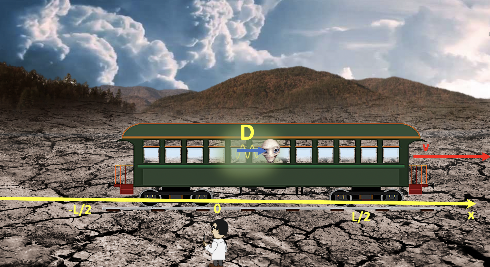

Forrige side🙂 🙁Et tankeeksperimentPADLET

Her ser vi event D illustrert. Event D er når lysstrålen fra lynnedslag B treffer øyet til passasjer P slik at passasjeren ser at lynet har slått ned bak også. Toget har beveget seg enda litt lenger til høyre (med hastighet v).